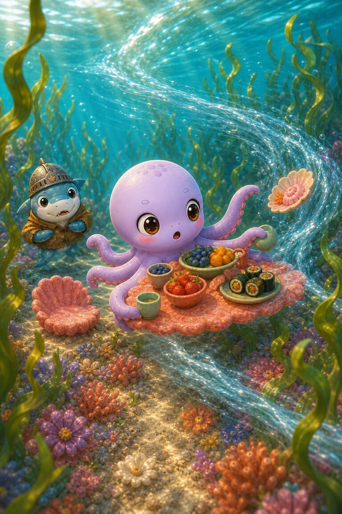
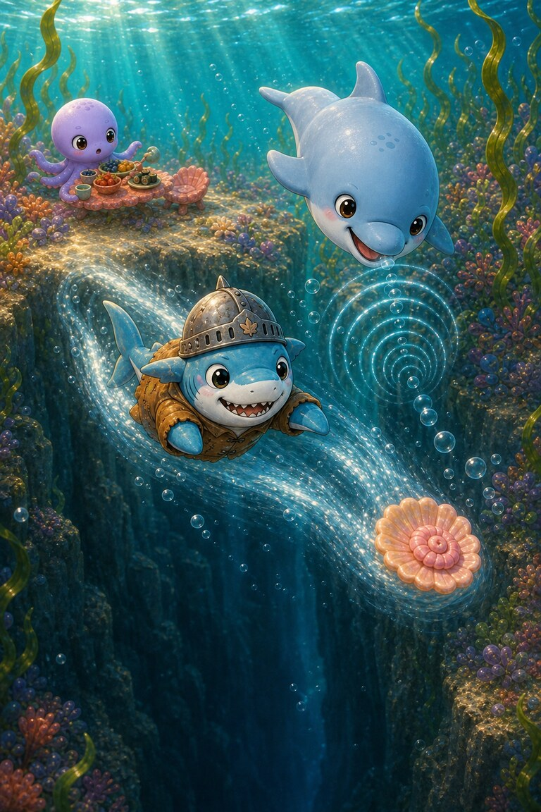
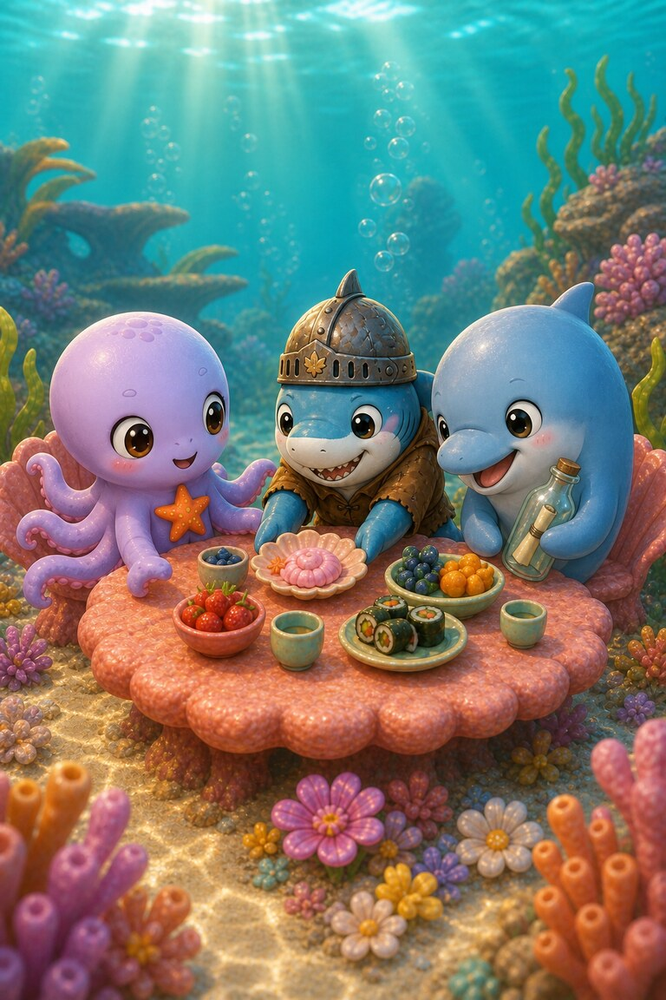

Page 1 of 4
Octo-Pop plans a coral picnic, but Cereal-Swimmer hovers behind a rock. He wants to join in and is too shy to ask.
A four-page undersea story about a shy swimmer, a runaway shell and a seat saved for a friend.
5 printed pages · 0.8 MB · A4 or US Letter. Download PDF · Open PDF to printOpens in a new tab. Use the PDF viewer's Print control. To use less ink, read online and choose only the questions on page 5 in Print.
Octo-Pop plans a coral picnic, but Cereal-Swimmer hovers behind a rock. He wants to join in and is too shy to ask.

Octo-Pop carries the picnic through the seaweed and saves one quiet place beside him. Then a rushing wave snatches the welcome shell.

The current spins the shell toward a dark trench. Cereal-Swimmer darts faster than anyone, while Bottle-Nose guides him with bright clicks.

They return before the tide turns. Cereal-Swimmer sets the shell in the middle and says, “I would like to sit here,” and everyone makes room.
His friends saved a place and worked with him. Being included helped him feel brave enough to say what he wanted.
He saved a place beside him.
SnackPack Sentences & Spelling has many more short reads like this one, plus the Reading Trail, word packs and literacy games.
Another friendship storyTed-E-Bear’s Blanket Fort
Know a family or class who would enjoy it?